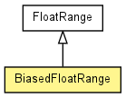

toxi.util.datatypes
Class BiasedFloatRange
java.lang.Object
 toxi.util.datatypes.FloatRange
toxi.util.datatypes.BiasedFloatRange
toxi.util.datatypes.FloatRange
toxi.util.datatypes.BiasedFloatRange
public class BiasedFloatRange
- extends FloatRange

| Methods inherited from class java.lang.Object |
equals, getClass, hashCode, notify, notifyAll, wait, wait, wait |
BiasedFloatRange
public BiasedFloatRange()
BiasedFloatRange
public BiasedFloatRange(float min,
float max,
float bias,
float sd)
- Parameters:
min - min value (inclusive)max - max value (inclusive)bias - bias value (can be outside the min/max range, but values will
be clipped)sd - standard deviation (if bias at range mean sd=1.0, the entire
range will be covered)
copy
public BiasedFloatRange copy()
- Overrides:
copy in class FloatRange
getBias
public float getBias()
- Returns:
- the bias
getStandardDeviation
public float getStandardDeviation()
- Returns:
- the standardDeviation
pickRandom
public float pickRandom()
- Overrides:
pickRandom in class FloatRange
setBias
public void setBias(float bias)
- Parameters:
bias - the bias to set
setStandardDeviation
public void setStandardDeviation(float sd)
- Parameters:
sd - the standardDeviation to set
toString
public java.lang.String toString()
- Overrides:
toString in class FloatRange